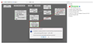
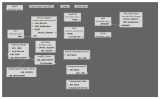
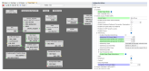
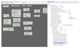
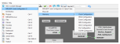

7 Low Power Design
This section explains in detail on how to enable the low power modes – Sleep/Standby or Deep Sleep/Backup modes in the design.
7.1 Low Power Design on PIC32-BZ6 Devices
The PIC32-BZ6 examples and protocol stacks include support for Sleep and Deep Sleep low power modes within the Harmony framework for PIC32-BZ6 devices. In this context, Sleep and Deep Sleep modes are equivalent to Standby and Backup modes, respectively. For consistency, this document refers to Sleep Mode as Standby and Deep Sleep Mode as Backup.
Difference between Sleep and Deep Sleep Low Power Mode:
Sleep Low Power Mode:
Application layer calls BLE stack to enable advertising, BLE stack will continue sending and receiving advertising Tx and Rx periodically until the application layer disables it
System continues to operate between Active Mode and Sleep Mode periodically based on the ADV Tx and Rx
Application layer can have peripherals running in sleep/standby low power mode
Deep Sleep Low Power Mode:
Application layer calls BLE stack to enable Deep Sleep Advertisement, BLE stack will backup advertisement parameters and data into backup SRAM and perform one time advertising event
After entering Deep Sleep low power mode, the system wakes up from reset, whereby all parameters are lost. Backup SRAM (retained in deep sleep low power mode)is used to save the advertisement parameters when waking up from reset.
Application layer will put system into Deep Sleep low power mode and control the wake-up time based on RTC timer (which runs in Deep Sleep low power mode)
Once the system wakes up from Deep Sleep low power mode, application layer triggers advertisement again by recovering the advertisement and data parameters that are stored in backup SRAM
Low Power Design of a system involves optimizing power both in Hardware and Software. To name a few:
-
System Design
-
MLDO vs Buck Mode (DC\DC), Operating in Buck Mode yields to power consumption savings of about
-
Board design to be able to measure the current consumed by the PIC32-BZ6 device alone as there can be multiple components in the system
-
Device Errata needs to be verified and special attention to issues that affect Device Power Consumption
-
Lower System Clock speed from 64 MHz to 48 MHz, some applications can operate with a lower system clock speed of 48 MHz
-
-
Hardware Design
-
Configuring the Transmitter power - @ 0 dBm with Buck Mode on @ 64 MHz, the PIC32-BZ6 device draws 22.72 mA
- @+12 dBm Transmitter (Buck Mode @64 MHz) current consumption is 42.82 mA
- @+4 dBm Transmitter (Buck Mode @64 MHz) current consumption is 24.98 mA
- At Power up, all GPIO's are inputs. Unused GPIOs should be configured as input and pull down configuration
-
-
Software Design
- Refer to Low Power BLE Application Design from Related Links.
7.2 Low Power BLE Application Design
When developing a wireless Bluetooth® application, the advertisement and connection intervals managed by the BLE stack play a key role in determining when the device enters and exits sleep modes. The BLE stack supports two types of low power or sleep modes:
Sleep
Deep Sleep
Sleep and Deep Sleep modes are equivalent to Standby and Backup modes, and these terms may be used interchangeably throughout this document.
The following table lists the various functionality/modules of the device that are available in the low power modes supported by BLE stack
|
Function |
Sleep |
Deep Sleep |
|---|---|---|
Legacy ADV | Available | Available |
Extended ADV (Coded PHY) | Available | Not Supported |
BLE Connection | Available | The device can begin advertising while in the “Deep Sleep” low power mode and, after establishing a BLE connection, transition to the “Sleep” low power mode. |
Peripherals | Available (see product datasheet for more info) | Limited - wakeup sources are available |
Device Wakesup from reset after exiting Sleep Mode | No | Yes |
System RAM | Available | Not retained |
Backup RAM | Not used by Application or BLE stack | Available and used by Application and BLE stack |
Timer used to manage sleep and wake-up times | Wireless Subsystem manages time intervals based on ADV/Connection intervals setup by API calls to BLE Stack library | RTC |
ADV intervals recommended | No min/max ADV interval | Min ADV interval = 500 ms for power consumption savings |
Sleep/ Standby Low Power Mode
What determines Application Sleep Duration and How to control it?
The BLE stack enables the system to enter low power mode when there is no ongoing data transmission or reception, or during the BLE advertisement or connection intervals. As a result, system sleep is managed automatically by the stack and cannot be directly controlled through a parameter or API call.
Device operation in Sleep low power mode?
While the system is in sleep mode, the system PLL clock is disabled and the system tick is stopped. The FreeRTOS timer must be adjusted to account for the duration spent in low power mode. The RTC timer can continue running during low power modes and is used to correct the FreeRTOS timer offset.
The total time the system spends in sleep mode is determined by factors such as BLE activity intervals, external interrupts (e.g., GPIO), or peripheral interrupts. Peripherals that are permitted to operate in standby or sleep low power mode can continue functioning during the "Sleep" mode. In "Deep Sleep" or "Backup" mode, only specific peripherals, such as the RTC and INT0, are allowed to remain active.
How to enable "Sleep/Standby" Low Power Mode ?
Reference application examples
BLE Sleep Mode Legacy Advertisements - See BLE Legacy Advertisements from Related Links.
Implements sleep low power mode with periodic ble legacy adv
BLE Extended Advertisements - See BLE Extended Advertisements from Related Links.
Implements sleep low power mode with periodic ble extended (coded PHY) adv
BLE Sensor - See BLE Sensor from Related Links.
Implements sleep low power mode in a ble connection oriented application and data exchange using Microchip Transparent UART Service. This application also has peripherals that are enabled to run in standby/sleep low power mode
BLE Custom Service - See BLE Custom Service from Related Links.
Implements sleep low power mode in a ble connection oriented application and data exchange using custom service. This application does not have peripherals continuing to run in standby/sleep low power mode
How to use MPLAB Code Configurator to Generate Sleep Mode low power mode code?
System Sleep Mode needs to be enabled in BLE stack H3 component configuration, after enabling this dependent components like RTC (Timer source during sleep) will be requested to be enabled

Upon enabling sleep mode, FreeRTOS related settings will be set automatically
Tick Mode will be set to Tickless_Idle
- Expected idle time before sleep will be set to 5 (ms)
Figure 7-1. . 
- Tick Hook will be enabled (For user to add any custom code needed to be executed within each tick interrupt)
Figure 7-2. . 
RTC peripheral library will be added and configured
Note: RTC counter must not be reset (RTC_Timer32CounterSet()) arbitrarily when the system is running.RTC clock source should be set manually, there are 4 options to choose from
FRC (±1% offset)
LPRC ( with larger offset, < ±5%)
POSC <- Candidate of the clock source (better clock accuracy)
SOSC <- Candidate of the clock source (better clock accuracy)
Note: Users must select POSC/SOSC as the RTC clock source as choosing other clock sources will impact BLE connection stability.Figure 7-3. . 
- Manually Setting RTC clock source - POSC, open MCC, select “Clock Configuration” and configure as highlighted.
Figure 7-4. . 
- Manually Setting RTC clock source - SOSC, open MCC, select “Clock Configuration” and configure as highlighted.
Figure 7-5. .  Note: Users can only select one clock source POSC or SOSC, steps are mentioned to choose either.
Note: Users can only select one clock source POSC or SOSC, steps are mentioned to choose either. - It is recommended to use 48 MHz as SYS_CLOCK for better power savings. This can be configured by setting SPLLPOSTDIV1 to
2as shown below.Figure 7-6. . 
Ensure that JTAG Enable is disabled by clearing the JTAGEN bit in CFGCON0 (Configuration Control Register 0) as shown below. This code snippet can be added to
SYS_Initialize()CFG_REGS->CFG_CFGCON0CLR = CFG_CFGCON0_JTAGEN_Msk;- All Unused pins in the application needs to be set in input mode and the pull-down must be enabled for these pins. This can be configured through pin configuration in Harmony3 Configurator as shown below.
Figure 7-7. . 
-
For more details on code generation, refer to MPLAB Code Configurator (MCC) Code Generation from Related Links.
| Implementation | Location |
|---|---|
| BT Sleep Mode | BLE Stack Library |
| System Sleep Mode |
|
| Execute BT/System Sleep | app_idle_task.c |
| RTC Based Tickless Idle Mode | app_idle_task.c |
FreeRTOS provides Tickless IDLE Mode for power saving, this can be used to stop periodic tick interrupts during idle periods (periods when there are no application tasks that are able to execute) For the lost count on time during the IDLE mode, RTC timer is used to make a correcting adjustment to the RTOS tick count value, when it is restarted (after waking up from sleep) More information on low power tickless mode is available in Low Power Support (For more information, refer to Low Power Support in Reference Documentation from Related Links. The Tickless Idle mode will be executed automatically when the Idle task is the only task able to run, because all the application tasks are either in blocked or suspended state. To prevent the system from entering sleep/standby low mode and waking up immediately, the minimum sleep time(IDLE time) is automatically set to 5 ms.
In order for the system to enter sleep, system needs to request bluetooth wireless subsystem to sleep. This is accomplished by calling API -
BT_SYS_EnterSleepMode()for BLE.

The API to call to ensure subsytem is sleeping (inactive) or ready for system to enter sleep mode is -
BT_SYS_AllowSystemSleep.
-
If the expected sleep time is greater than 5 ms, system is allowed to enter sleep mode by checking for 2 conditions:
-
Bluetooth subsystem is inactive
-
eTaskConfirmSleepModeStatus()returnseNoTasksWaitingTimeout. For more information, refer to eTaskConfirmSleepModeStatus in Reference Documentation from Related Links
Note: User can also add their own condition to be checked before system goes to sleep, for example, do not enter system sleep if data transmission over UART is activePseudo code in RTC based Tickless Idle Mode: ``` if ((BT_SYS_AllowSystemSleep() || ZB_ReadyToSleep()) && ( eTaskConfirmSleepModeStatus() != eAbortSleep ) && (user_condition)) { //Enter System Sleep Mode DEVICE_EnterSleepMode (); //RTC Based Tickless Idle Mode } ``` -
When both the conditions as mentioned in point 3 are met, we enter RTC based Tickless Idle mode (Stop the system tick, use of RTC timer to set the sleep time, disable interrupts)
System will enter sleep mode after setting the RTC based Tickless Idle Mode by calling API -
Device_EnterSleepMode()and then wait for Interrupt (WFI) instruction is executed
How does the system exit from sleep mode?
System when in sleep/standby mode can be waken up by RTC timeout, BLE or GPIO interrupt
Sleep mode exit is initiated by calling API -
DEVICE_ExitSleepMode()Upon exiting the sleep mode, interrupts need to be re-enabled to allow the interrupt service routine to be executed
- Interrupts are disabled as the sys tick needs to be compensated (Tickless IDLE mode)


Deep Sleep/Backup Low Power Mode
What determines Application Sleep Duration and How to control it?
The user application controls how long the device remains in Deep Sleep low power mode. When the user sets the advertisement interval and enables Deep Sleep mode in the BLE_Stack component within the Microchip Code Configurator, all necessary APIs for entering and exiting Deep Sleep are automatically generated. It is the responsibility of the user application to enable Deep Sleep advertising and to manage the sleep and wake-up durations according to the chosen advertisement interval.
Unlike Sleep mode, which relies on a timer within the wireless subsystem to
manage sleep and wake-up periods, Deep Sleep mode does not have access to
this timer. Instead, the RTC timer available during Deep Sleep is used, and
its interrupt, configured according to the Deep Sleep advertisement
interval, is used to wake the device. The user can transition the device
into Deep Sleep low power mode after receiving the
“BLE_GAP_EVT_ADV_COMPL” event from the BLE
stack.
Device operation in Deep Sleep low power mode?
When the application layer initiates the BLE stack to enable Deep Sleep Advertisement, the BLE stack backs up advertising parameters and application data into backup RAM and performs a one-time advertisement event.
Application layer will put the system in Deep Sleep mode and control Deep Sleep wake-up time using RTC timer. User is responsible for putting the system in deep sleep mode and control the wake-up from RTC.
Based on the RTC Timer interval, the device wakes up from Deep Sleep low power mode. Exiting Deep Sleep mode is similar to Power on Reset. Backup RAM saves the adv parameters through a reset, upon wake-up BLE stack will be able to continue advertisements based on the data retained in backup RAM.
What is the device start-up and initialization time when waking up from deep sleep low power mode, since the device wakes up from reset?
Device start-up and initialization code is different and more optimized to enable fast completion
of initialization post a reset caused by waking up from deep sleep low power
mode. MPLAB code configurator generates API
“DEVICE_DeepSleepIntervalCal” to calibrate the
sleep duration based on the ADV interval chosen. The device's start-up and
initialization procedures are optimized to make the device enter deep sleep
low power mode as soon as possible. Total time spent during device start-up
and firmware initialization is approximately 10 ms. Average device start-up
time is 1.5 ms. The firmware initialization time for various applications
can change based on the user choice of peripherals and clocks to be
initialized.
How to maintain I/O state when device comes out of reset when using deep sleep low power mode?
Device needs to backup all GPIO register settings prior to entering the deep sleep mode and
recover these settings when devices wakes up from deep sleep prior
to clearing the Deep Sleep register “DSCON”. This register is
cleared by the following generated API
“DEVICE_ClearDeepSleepReg()”
How to use MPLAB Code Configurator to Generate Deep Sleep Mode low power mode code?
- Add the Harmony Components to project graph, some components are optional based on Application being developed.

- Configuration settings for “BLE stack” component.

- Configuration settings for “RTC” component.

- “POSC” as Low Power Clock Source (LPCLK), select clock configuration.


Figure 7-8. POSC Config bits Generated after Code Generation. 
- “SOSC” as Low Power clock source(LPCLK), select clock configuration.

Figure 7-9. SOSC Config bits Generated after Code Generation. 
Clock Switching mechanism , if LPCLK source is set as POSC clock source using clock configuration, the FW switch to LPRC as LPCLK source as POSC clock source is unavailable in Deep Sleep Low Power Mode.
- Reference application examples
- BLE Deep Sleep Advertising - See BLE Deep
Sleep Advertising from Related Links.
- On reset Device starts in Deep Sleep Mode, upon press of SW1 button on curiosity board the system starts Deep Sleep Advertisements, once connected to a central device the device will switch to Sleep low power mode
- BLE Deep Sleep Advertising - See BLE Deep
Sleep Advertising from Related Links.
Recommendations for using Deep Sleep ADV mode
Deep Sleep ADV must be used when the ADV interval is >= 500 ms
What are the BLE Advertisements supported when using Deep Sleep Low Power Mode?
BLE Legacy Advertisement types “
ADV_IND”, “ADV_SCAN_IND”, “ADV_DIRECT_IND_LOW” and “ADV_NONCONN_IND” are supported when using Deep Sleep mode
What is the procedure for retaining Application data in backup RAM?
User must define the variable as persistent. Persistent variables are variables that should not be cleared by the runtime start-up code, such as during a reset. User should initialize a persistent variable as follows. The data read/write into backup RAM must be single word (4 bytes)
uint32_t __attribute__((persistent)) backup1;
User firmware should not assign initial value for persistent variables.
Bootloader Firmware Authentication when using deep sleep low power mode?
If the bootloader has Firmware Authentication enabled, the bootloader checks for Firmware Authentication upon all types of resets like POR, BOR, etc. Firmware Authentication is skipped only when the device wakes up from Deep Sleep Low Power Mode.
RTC Clock Sources that are recommended to be used when using deep sleep low power mode?
SOSC or LPRC are the clock sources recommended when using deep sleep mode.